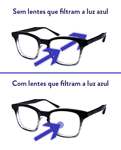

Muito tempo no Computador ou Celular?? Dores de Cabeça e Cansaço Visual?? Conheça as Lentes Blue Light.
É praticamente impossível passarmos muito tempo sem utilizar aparelhos digitais em nosso dia a dia. Luzes LED, televisores, computadores, notebooks, smartphones, tablets, a todo momento, seja por lazer e diversão, seja pelo trabalho, nossa visão está sempre em contato com tais dispositivos.
Com isso, ficamos suscetíveis aos efeitos nocivos da luz azul e dos raios UV, capazes de gerar um certo estresse ocular, cansando as vistas e gerando problemas de visão.
Neste cenário, uma solução cada vez mais indicada pelos profissionais do segmento óptico é o uso das lentes BLUE LIGHT.
Entenda melhor, a seguir, os efeitos da luz azul e raios UV em nossa visão, e como as lentes BLUE LIGHT podem contribuir com a nossa saúde visual.
Quando mantemos nossas vistas expostas a luz azul não natural, podemos desencadear os seguintes sintomas:
A tecnologia das lentes BLUE LIGHT é capaz de proporcionar uma proteção e prevenção contra os males causados pelo excesso dos raios de luz azuis não naturais.
Ela promove aos olhos um maior conforto de visualização, blindando nossos olhos contra a luz azul nociva e bloqueando 100% os raios UV. Sem contar que as lentes BLUE LIGHT proporcionam redução de efeitos de brilho, ou seja, promove maior conforto visual para o usuário.
Por esses e tantos outros motivos, este produto resulta no que há de mais moderno em tecnologia e tratamento visual, sendo refletindo a combinação ideal para barrar os efeitos maléficos da luz azul e ao mesmo tempo reduzindo os efeitos dos raios UV.
Fale hoje mesmo com seu oftalmologista ou ótico de confiança e pergunte a ele sobre esta incrível lente.
Primeiramente você precisa analisar sua receita:
No campo Esférico é onde você verá seu grau de Miopia (sinal negativo) ou Hipermetropia (sinal positivo). Esse campo pode estar vazio se você não possuir nenhuma das ametropias citadas.
No campo Cilíndrico ou Cilindro é onde você verá seu grau de Astigmatismo (sinal negativo). Esse campo pode estar vazio se você não possuir Astigmatismo.
Diante dessas informações você escolherá as lentes que mais se adaptam às suas medidas:
* Espessura Normal: (Lentes de Acrílico com Índice de refração de 1.56)
Graus Esféricos até -2,00 (miopia) ou +2,00 (hipermetropia) e Cilindrico até -2,00 (astigmatismo)
*Espessura Fina: (Lentes de Acrílico com Índice de refração de 1.61)
Se você possuir o Grau Esférico maior que 2,00 e até -4,00 (miopia) ou +4,00 (hipermetropia) e Cilindrico até -2,00 (astigmatismo) essas serão as lentes ideais no seu caso.
*Espessura Super Fina: (Lentes de Acrílico com Índice de Refração de 1.67)
Se você possuir o Grau Esférico maior que 4,00 e até -6,00 (miopia) ou +6,00 (hipermetropia) e Cilindrico até -2,00 (astigmatismo) essas serão as lentes ideais no seu caso.
* Graus Altos: ( Lentes de Acrílico Surfaçadas com Índice de Refração de 1.74)
Ideais para graus de Miopia ou Hipermetropia acima de 6,00 com Cilindrico até -2,00

Qualquer dúvida entre em contato conosco!!
Envie sua receita por e-mail falecom@oticastore.com.br ou clique no botão abaixo para ser redirecionado para o WhatsApp.